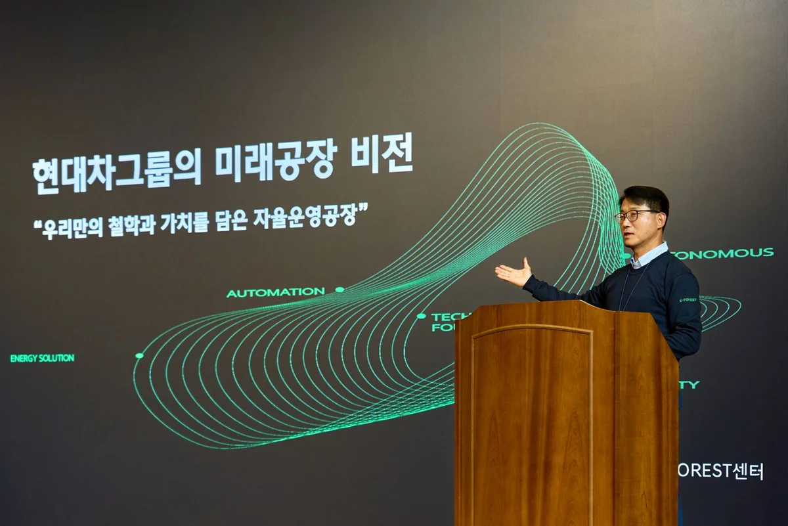
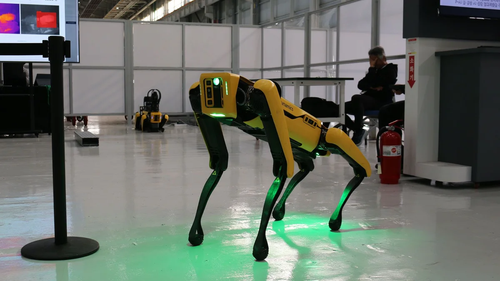
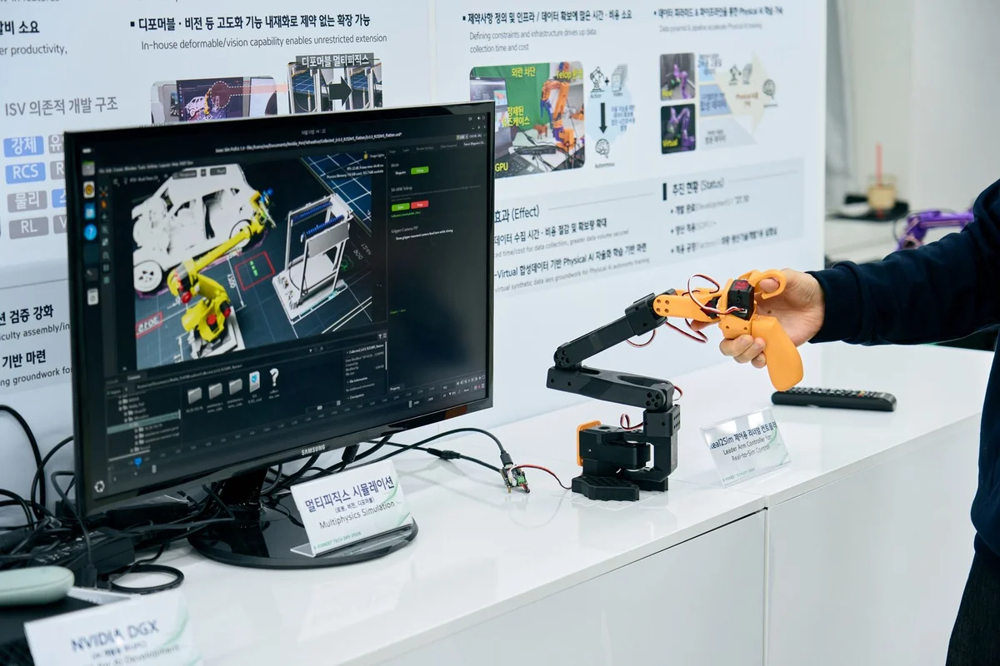
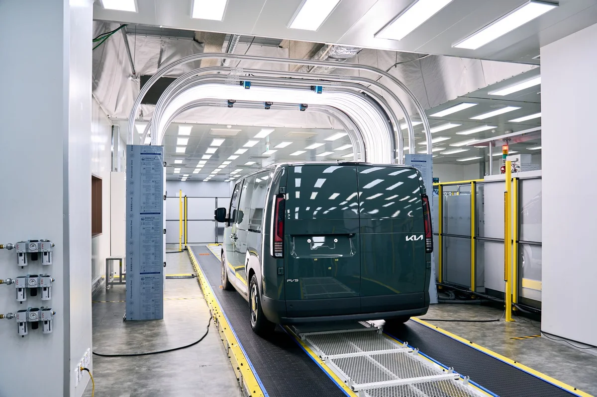
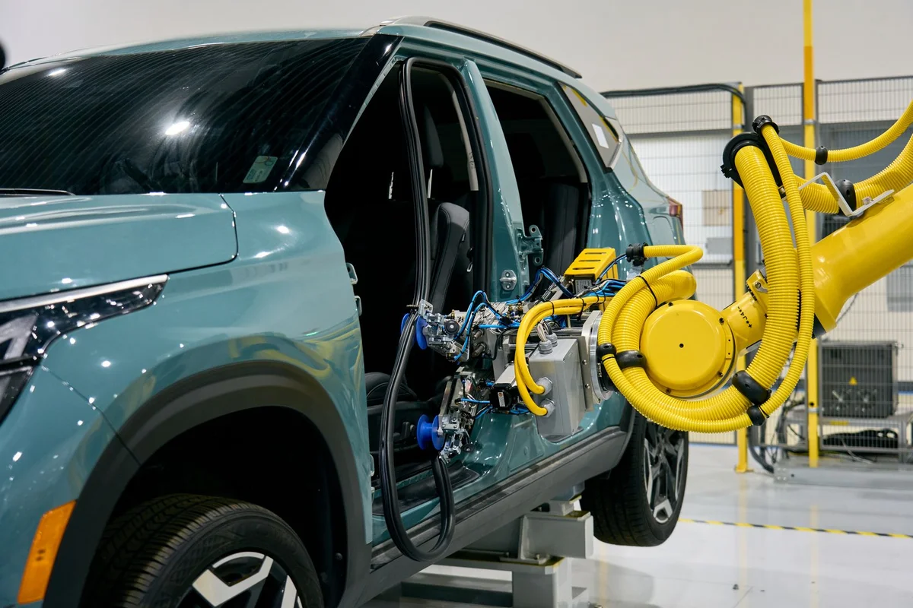
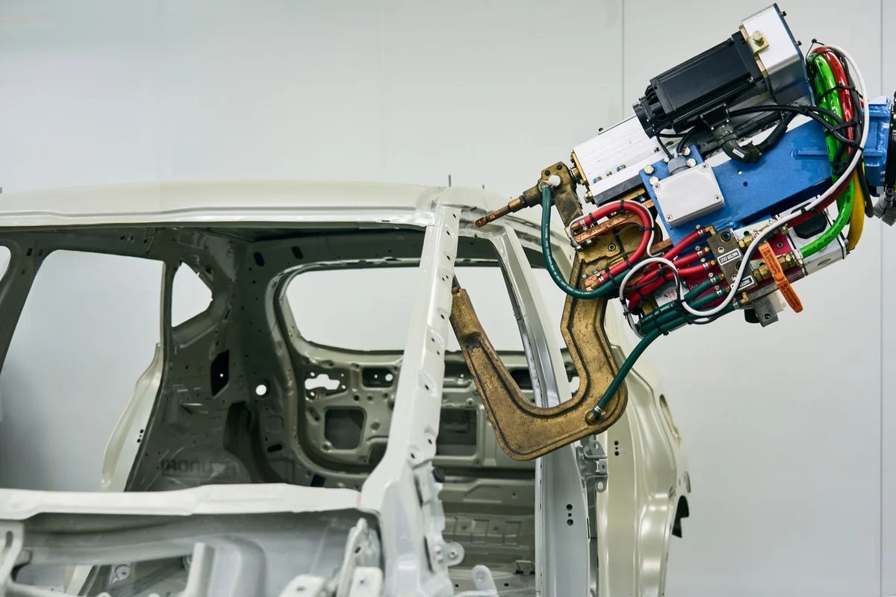
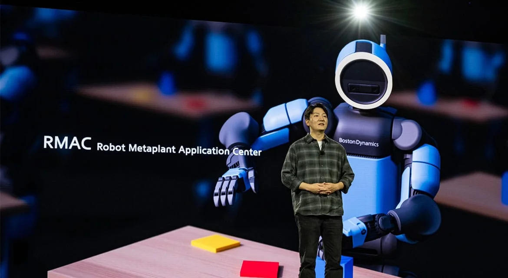
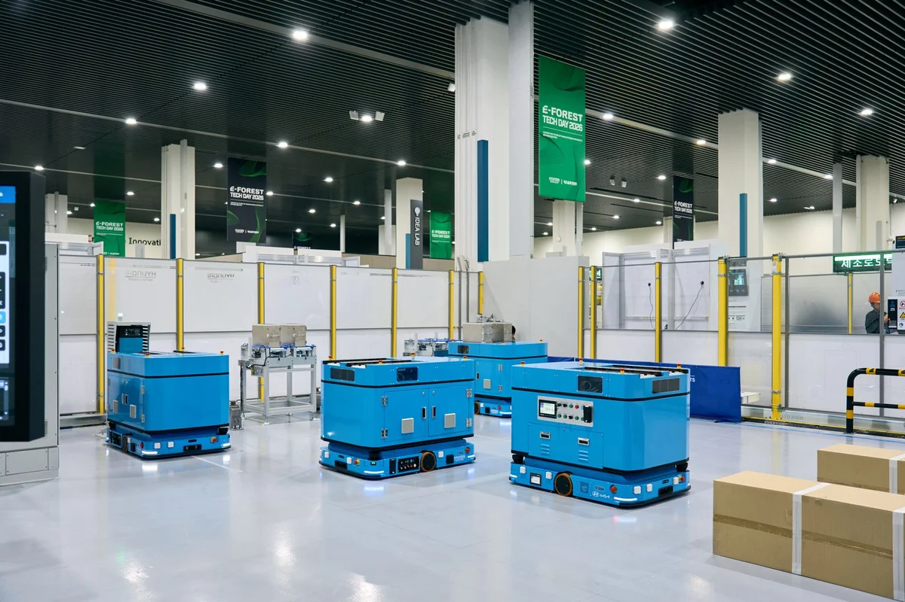
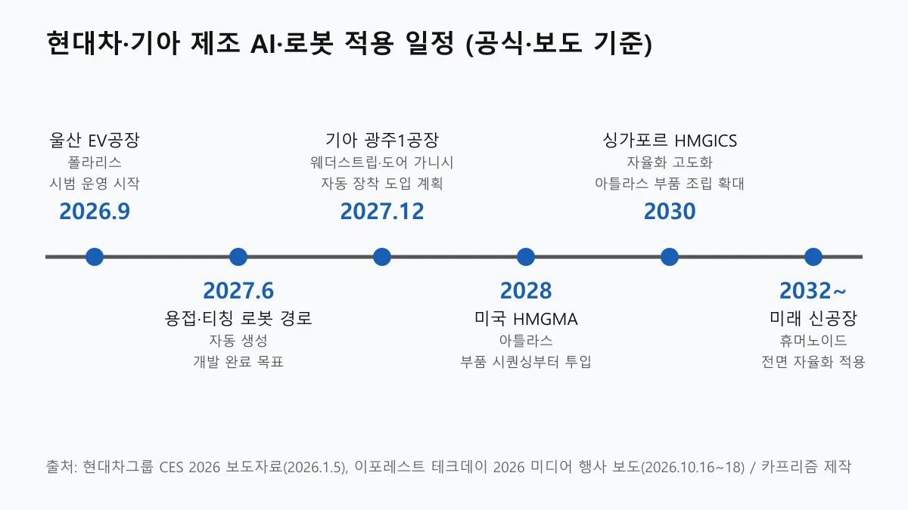

▲ 현대차그룹이 CES 2026에서 공개한 아틀라스 제품형. 2028년 미국 메타플랜트에서 부품 시퀀싱부터 투입될 계획이다 ⓒ 현대차그룹(CES 2026 보도자료 사진, 사용자 책임 하 사용)
"AI가 공장을 돌린다"는 말, 막상 내가 타는 차의 품질이나 출고 대기와는 무슨 상관일까. 현대차·기아가 10월 16일 의왕연구소에서 공개한 스마트 팩토리 기술 200여 건을 보면, 일부는 내 차에 곧바로 닿고 일부는 아직 먼 이야기다.
이 글은 이번 '이포레스트 테크데이 2026'에서 확인된 기술을 품질·납기·가격·일자리 네 가지 독자 관점으로 나눠, 무엇이 이미 적용 중이고 무엇이 목표 단계인지 구분해서 정리한다. 회사가 공식 발표하지 않은 수치는 만들지 않았다.
1. 무슨 행사였나 — 설비 대수가 아니라 "데이터로 잇는 공장"
이번 테크데이의 핵심 메시지는 개별 로봇 성능이 아니라 AI와 데이터로 여러 공정을 연결한다는 것이다. 오토헤럴드는 16일 미디어 행사에서 개별 설비보다 공정을 잇는 기술이 전면에 섰다고 전했다. 최영태 E-FOREST 센터장은 "자동화를 확대하는 것을 넘어 공장이 스스로 판단하고 학습하며 진화하는 자율운영공장으로 나아가는 것"이 과제라고 밝혔다(디지털데일리 보도).
"200여 건"은 현대차그룹이 10월 18일 배포한 이포레스트 테크데이 2026 보도자료(현대차 글로벌 뉴스룸 영문 보도자료 바로가기)에 나온 전시 규모다. 보도자료는 SDF 기반 기술, 자동화, 에너지 솔루션, 미래 모빌리티 4개 영역에서 약 200건의 신기술을 선보인다고 설명한다. 미디어 행사에서 공개된 폴라리스·물류로봇 수치 등은 이 보도자료가 아니라 16일 현장 발표를 전한 언론 보도에 근거한다.
자율 운영 공장이란 사람이 없는 무인 공장이 아니다. 사람과 로봇이 협업하고, 데이터와 소프트웨어가 생산 과정을 계속 최적화하는 체계로 정의됐다(아이뉴스24·오토헤럴드 보도).
| 항목 | 내용 |
|---|---|
| 주최 | 현대차·기아 제조솔루션본부와 협력사 |
| 횟수 | 올해 7회째 |
| 일정·장소 | 미디어 공개 10월 16일, 본행사 10월 19~21일, 의왕연구소 |
| 전시 | 4개 분야 200여 건(SDF 추진 기반 기술, 자율화·자동화, 에너지 솔루션, 미래 모빌리티) — 현대차그룹 보도자료(10월 18일) |
| 부대 행사 | 신제조기술 발표 대회, 협력사 세미나(피지컬 AI·제조 AI 주제) |
이 행사는 2025년(6회차, 11월 6일 보도자료)에는 화성·울산 공장에서 열려 177개 기술을 전시했고, 현대차그룹은 매년 의왕연구소와 생산공장을 번갈아 연다고 정리한 바 있다. 연구소에서 만든 기술을 공장에서 검증해 넓히는 순환 구조다.
숫자를 헷갈리지 않으려면 같은 달 14일 화성에서 열린 '2026 R&D 협력사 테크데이'와 구분해야 한다. 이 행사는 37개 협력사의 기술 42건을 전시했고 대동도어의 '소프트 오프닝 래치'가 최우수상을 받았다(현대차그룹 뉴스룸). 협력사 부품 기술 행사이지 이포레스트 테크데이가 아니다.

▲ 미래공장 비전을 발표하는 이포레스트 테크데이 2026 미디어 행사 현장. 슬라이드에는 "우리만의 철학과 가치를 담은 자율운영공장"이라는 문구가 보인다 ⓒ 현대차그룹(E-FOREST TECH DAY 2026 보도자료 사진, 2026.10.16 촬영, 사용자 책임 하 사용)

▲ E-FOREST TECH DAY 2025 보도자료에 실린 스폿 로봇. 현대차그룹은 스폿이 공장을 순찰하며 진동·온도·가스 누출을 감지해 고장을 사전 예방하는 기술을 소개했다 ⓒ 현대차그룹(E-FOREST TECH DAY 2025 보도자료 사진)
2. "7월 차체 품질 결함 톱3 알려줘" — AI 에이전트 폴라리스
폴라리스는 설비·품질 데이터를 AI에게 말로 물어보고 분석 결과를 받는 제조 AI 에이전트다. 오토헤럴드에 따르면 시연에서 생산 종합 현황을 요청하자 가동률과 생산 정보가 화면에 나왔고, "7월 차체 품질 결함 톱3를 조회하고 톱1의 원인과 조치 방법을 알려달라"는 질문(헤럴드경제 보도)에 결함 유형·발생 건수와 함께 금형 이물질 관리, 정기 점검 같은 개선 방안이 제시됐다. 최 센터장은 시연 데이터가 울산 전기차 신공장의 실제 데이터라고 밝혔다.
아이뉴스24는 폴라리스가 울산 EV공장에서 지난 9월부터 시범 운영 중이라고 전했다. 디지털데일리는 차체·도장·조립 전반의 생산 현황을 보고할 수 있고, 앞으로 다른 애플리케이션과 연결해 에이전틱 AI 기능을 더할 계획이라고 보도했다. 아이뉴스24는 '폴라리스 팩토리'가 MES·IQIS 등 제조 시스템에 흩어진 가동·품질·보전 정보를 모아 분석하며, 데이터 조회·분석, 생산 노하우 검색, 사내 문서 연계, 음성 기반 지원 등 4종의 특화 에이전트로 구성됐다고 전했다.
가상 시운전도 함께 소개됐다. 아시아경제·헤럴드경제에 따르면 엔비디아와 협업해 설비·로봇·제어 프로그램을 디지털 트윈에서 먼저 검증하는 기술로, 울산 EV공장의 신차 양산 준비에 적용할 계획이다. 헤럴드경제에 따르면 현대차 관계자는 이를 엔비디아와의 협업을 구체화한 첫 사례라고 설명했다고 한다.
📍 독자에게 의미하는 것
기존에는 여러 시스템을 조회하고 담당자가 직접 분석해야 했던 결함 원인 파악이 빨라질 수 있다. 다만 "결함이 몇 퍼센트 줄었다" 같은 성과 수치는 이번 행사에서 공개되지 않았다. 빨라진 원인 분석이 완성차 품질로 이어지는지는 앞으로 지켜봐야 한다.

▲ 디지털 트윈·시뮬레이션과 소형 로봇팔을 함께 보여 주는 전시 부스. 옆 패널에 NVIDIA DGX 표기가 보인다. 공식 사진 설명은 행사 제목뿐이라 전시 항목은 사진 속 표기만 근거로 했다 ⓒ 현대차그룹(E-FOREST TECH DAY 2026 보도자료 사진, 2026.10.16 촬영, 사용자 책임 하 사용)
3. 품질 — 외관검사와 사람 손이 흔들리던 공정
내 차의 품질과 가장 직접 닿는 기술은 외관검사와 정밀 조립 자동화다. 터널형 외관검사 비전 기술은 차량이 터널 모양 장치를 통과하며 외관 상태를 확인하는 방식이다. M포스트는 3D 시뮬레이션 방식으로 외관을 정밀 검사한다고 설명했고, 그동안 외부 전문업체 시스템을 쓰던 영역을 자체 개발했다고 전했다. 아시아경제·헤럴드경제는 차량 한 대당 약 5,000장의 초고해상도 이미지를 촬영해 AI로 결함 위치와 크기를 표시하며, 국내외 공장 비전 시스템의 95% 이상이 외부 솔루션에 의존해 왔다는 현대차 관계자의 설명을 전했다. 시연에는 기아 PV5가 쓰였다(뉴스웍스·헤럴드경제).

▲ 터널형 외관검사 비전 시연 장비와 기아 PV5. 차량이 터널 모양 장치를 통과하며 외관을 촬영한다 ⓒ 현대차그룹(E-FOREST TECH DAY 2026 보도자료 사진, 2026.10.16 촬영, 사용자 책임 하 사용)
아이뉴스24에 따르면 외관검사 광학계와 알고리즘을 자체 개발해 외국산 의존도를 낮췄고, 화성 EVO West 공장에 먼저 적용할 예정이다. 현대차·기아는 이후 국내외 생산 거점으로 넓힌다는 계획이다.
웨더스트립·도어 가니시 자동 장착도 눈여겨볼 만하다. 형상과 위치가 다양하고 정밀성이 필요해 기존 산업용 로봇만으로는 자동화가 어려웠던 영역이다. 아이뉴스24는 이를 로봇으로 자동화해 작업 편차와 조립 불량을 줄인다는 설명이라고 전했다. 아시아경제·이비엔은 도어 가니시는 클립 19개를 정확히 끼워야 하는 작업이며, 로봇이 부품을 맞춘 뒤 압력을 가하고 센서로 체결을 확인한다고 전했다. 웨더스트립·도어 가니시 자동 장착은 2027년 12월 기아 광주1공장 도입이 계획이다(시사오늘·아시아경제 보도, 이비엔은 개발 완료 목표를 2027년 6월로 전해 매체 간 표현이 다르다).

▲ 차량 도어 쪽에서 작업하는 로봇 시연. 보도된 도어 가니시 자동 장착 시연 장면으로 보이나, 공식 사진 설명에는 항목명이 없어 확정은 아니다 ⓒ 현대차그룹(E-FOREST TECH DAY 2026 보도자료 사진, 2026.10.16 촬영, 사용자 책임 하 사용)
| 기술 | 확인된 내용 | 적용 상태(보도 기준) |
|---|---|---|
| 터널형 외관검사 | 자체 개발 완료, 검사 일관성·정밀도 향상 목적 | 화성 EVO West 우선 적용 예정, 이후 국내외 확대 |
| 웨더스트립·도어 가니시 자동 장착 | 작업 편차·조립 불량 감소 목표 | 2027년 12월 기아 광주1공장 도입 계획(보도) |
| 폴라리스 결함 분석 | 결함 유형·건수 조회와 개선안 제시 | 울산 EV공장 9월부터 시범 운영 |
용접 쪽도 있다. 헤럴드경제·아시아경제에 따르면 차체 용접점 1,700개 이상에 대해 AI가 로봇 이동 경로를 자동 생성하고, 3D 비전 센서로 가상 모델과 실제 환경의 오차를 보정한다. 목표 용접점에 1mm 이내로 접근하는 것이 목표이며 개발 완료는 2027년 6월이다.

▲ 차체(골격) 앞에서 용접 건을 장착한 로봇. 용접 경로 자동 생성 관련 전시로 보이나 공식 사진 설명에는 항목명이 없다 ⓒ 현대차그룹(E-FOREST TECH DAY 2026 보도자료 사진, 2026.10.16 촬영, 사용자 책임 하 사용)
오토헤럴드는 검사 속도뿐 아니라 일관성과 정밀도, 그리고 검사 데이터를 쌓아 활용하는 체계가 중요해졌다고 짚었다. 외관 불량을 사람 눈에만 맡기던 방식에서 데이터로 남기는 방식으로 옮겨 간다는 뜻이다.
4. 납기 — "출고 대기가 줄어드나"는 아직 대답이 없다
가장 궁금한 출고 대기 단축에 대해서는 이번 행사에서 구체적 수치가 나오지 않았다. M포스트 보도에도 출고 대기 기간에 관한 내용은 없다. 다만 현대차그룹은 2025년 테크데이 보도자료에서 소프트웨어 중심 공장(SDF)이 완전히 구축되면 신차 개발·생산 준비 기간 단축, 생산 속도 향상에 따른 고객 대기시간 감소, 설비 투자비 절감, 품질 개선을 기대할 수 있다고 밝혔다.
즉 납기 단축은 "완전 구축 시 기대 효과"로 제시된 것이다. 실제 출고 대기에는 부품 공급, 노사 협상, 수요 같은 변수가 훨씬 크게 작용한다. 현재 차종별 대기 현황은 제네시스·기아 10월 출고 대기 기사에서 확인할 수 있다.
디지털 트윈 기술은 이 기대 효과의 핵심 도구다. 실제 설비와 연동된 가상 공간에서 생산 상황을 시뮬레이션해 문제를 사전에 검증하고 공정을 최적화한다. 현대차·기아는 실제 설비에서 시행착오를 반복하는 부담을 줄이는 것이 목적이라고 설명했다. 신차 양산 준비 단계에서 라인을 고칠 일이 줄어든다는 구상이다.
✅ SDF(소프트웨어 중심 공장), 한 줄로
· 공장마다 따로 만들던 시스템을 공통 제조 플랫폼으로 묶는다. 기반 층이 '테크 파운데이션', 핵심 기능을 표준화한 층이 '코어 시스템'이다.
· 그 위에 품질·설비 보전·생산 운영 앱을 얹어 신공장뿐 아니라 기존 공장에도 넓힌다는 계획이다(오토헤럴드·디지털데일리 보도).

▲ CES 2026에서 소개된 로봇 메타플랜트 적용센터(RMAC). 현대차그룹은 CES에서 RMAC에서 훈련한 아틀라스를 2028년부터 조지아 메타플랜트의 시퀀싱 공정에 투입하겠다고 밝혔다 ⓒ 현대차그룹(CES 2026 보도자료 사진)
5. 로봇 — 물류로봇은 가깝고, 휴머노이드는 멀다
로봇 이야기는 "지금 쓰는 것"과 "목표 단계"를 구분해야 헷갈리지 않는다. 이번 행사에서 확인된 가까운 쪽은 물류로봇 표준화다. 아이뉴스24는 하드웨어와 주행 소프트웨어를 내재화해 물류로봇 제작비를 약 30% 낮췄고, 하이브리드 배터리로 충전 시간을 2시간에서 최대 12분으로 줄였다고 전했다. 화성 EVO West와 울산 공장 적용을 추진 중이라는 것이다. 뉴스웍스·이비엔·이투데이도 같은 수치를 전했으나 현대차그룹 공식 보도자료에는 없어 "보도 기준"으로 받아들이는 것이 안전하다. 이투데이는 관제시스템이 공장 안 수십 대 로봇과 100개 이상의 이동 경로가 충돌하지 않도록 제어한다고 전했다.

▲ 전시장에 놓인 물류로봇. 하드웨어와 주행 소프트웨어를 자체 개발해 표준화했다는 설명이다 ⓒ 현대차그룹(E-FOREST TECH DAY 2026 보도자료 사진, 2026.10.16 촬영, 사용자 책임 하 사용)
로봇 경로 자동 생성(티칭 자동화)은 2027년 6월 개발 완료가 목표다. 사람이 일일이 가르치지 않아도 알고리즘이 로봇 이동 경로를 만들고 3D 비전 센서가 가상 모델과 실제의 차이를 보정하는 방식이다(이투데이·헤럴드경제 보도).
피지컬 AI는 한 단계 더 나간다. 기존 산업용 로봇이 정해진 동작을 반복했다면 피지컬 AI 로봇은 주변 환경과 작업 대상을 인식하고 판단해 정밀 작업을 한다. 현대차·기아는 부품 공급(시퀀싱), 차량 내부 와이어링, 도장 터치업처럼 난도가 높거나 근로 환경 부담이 큰 영역에 쓸 계획이라고 밝혔다.
휴머노이드 일정이 기사마다 달라 보이는 이유
"아틀라스는 2028년"과 "휴머노이드는 2032년 이후"가 같이 나와 헷갈릴 수 있다. 두 가지는 범위가 다르다.
| 시기 | 내용 | 출처 |
|---|---|---|
| 2028년 | 미국 조지아 메타플랜트(HMGMA)에서 아틀라스를 안전·품질 효과가 검증된 공정(부품 시퀀싱 등)부터 투입 | 현대차그룹 CES 2026 보도자료(1월 5일) |
| 2030년 | 아틀라스 적용을 부품 조립으로 확대. 같은 해까지 싱가포르 HMGICS에서 가상 환경 기반 자율화 제조시스템 고도화 | CES 보도자료·테크데이 미디어 행사 보도(디지털데일리·이투데이) |
| 2032년 이후 | 미래 신공장에 휴머노이드와 전면적 자율화 기술 적용 | 최영태 센터장 발표(디지털데일리·이투데이·이비엔·아이뉴스24 보도) |
2028년은 기존 공장에 아틀라스를 일부 공정에 넣는 계획이고, 2032년은 처음부터 자율화를 전제로 짓는 신공장의 계획이다. 현대차그룹은 CES에서 아틀라스 제품형이 자유도 56개, 최대 50kg 가반하중을 갖추고 산업용으로 설계됐다고 밝혔으며, 2028년까지 연간 3만 대 로봇 생산체계를 구축하겠다는 목표도 내놨다.

▲ 공식 발표와 보도로 확인되는 적용 일정(2026년 9월~2032년 이후) ⓒ 카프리즘 제작(현대차그룹 CES 2026 보도자료·이포레스트 테크데이 2026 언론 보도 기준)
CES 발표 내용은 현대차 뉴스룸 CES 2026 보도자료 바로가기에서, 지난해 테크데이 내용은 E-FOREST TECH DAY 2025 보도자료 바로가기에서 직접 확인할 수 있다.
6. 가격과 일자리 — 사실로 확인되는 것만
공장 자동화가 신차 가격을 낮춘다는 발표는 이번에 없었다. 물류로봇 제작비 30% 절감은 공장 설비 비용 이야기이고, 이것이 차량 가격에 반영될지는 회사가 밝히지 않았다. 설비 투자비 절감이 SDF의 기대 효과로 언급된 것까지가 확인 범위다.
일자리 문제는 회사가 먼저 답을 내놨다. 최영태 센터장은 아이뉴스24 보도에서 "자동화의 목적은 사람을 줄이는 것이 아니라 사람이 더 안전하고 더 중요한 일에 집중할 수 있는 제조환경을 만드는 것"이라고 말했다. 반복적이고 위험한 작업은 로봇이 맡고, 작업자는 판단·관리·공정 개선 업무로 옮긴다는 구상이다.
그러나 이 입장이 노사 합의된 내용은 아니다. 올해 8월 현대차 노조의 전면 파업에서도 2028년 아틀라스 도입이 쟁점으로 올라왔다. 당시 상황은 현대차 10년 만의 전면 파업·로봇 갈등 기사에, 휴머노이드의 효율성 논쟁은 공장 휴머노이드는 정말 필요한가에 정리돼 있다.
| 관점 | 확인된 내용 | 아직 확인되지 않은 것 |
|---|---|---|
| 품질 | 자체 외관검사 비전 개발, 조립 편차 감소 목표, 폴라리스 시범 운영 | 불량률·리콜 감소 같은 성과 수치 |
| 납기 | SDF 완전 구축 시 대기시간 감소 기대(2025년 보도자료) | 실제 출고 대기 단축 폭·시점 |
| 가격 | 물류로봇 제작비 약 30% 절감(보도) | 차량 가격에 미치는 영향 |
| 일자리 | "사람을 줄이는 것이 목적 아니다"라는 회사 입장 | 2028년 아틀라스 투입에 따른 인력 운영 합의 |
7. 아직 남은 과제 — 기자도 "완성은 아니다"라고 썼다
오토헤럴드는 AI가 공장 운영을 스스로 최적화하고 피지컬 AI 로봇이 복잡한 작업을 수행하는 완전한 자율 운영 공장은 아직 구현 과제가 남아 있다고 평가했다. 현대차·기아도 기술 실증, 공장 간 표준화, 실제 양산 환경 검증을 거쳐 단계적으로 넓힌다는 입장이다.
이번 글에서 확인하지 못한 항목도 밝혀 둔다. 현대차그룹 보도자료는 전시 규모(200여 건)와 구성만 담고 있어, 폴라리스·물류로봇 수치·2030·2032 일정은 16일 미디어 행사를 전한 오토헤럴드·디지털데일리·아이뉴스24·이비엔·이투데이·시사오늘 등의 보도를 교차해 구성했다. 이 수치들은 회사 현장 발표를 전한 것이지만 보도자료 원문으로는 확인하지 못했다. 한국어 보도자료 원문 페이지는 작성 시점에 찾지 못했다(영문판 확인).
울산 EV공장과 현대차그룹 전반의 신차 계획은 현대차 2030 전략 기사에서, 현대차의 자율주행 로드맵은 자율주행 목표 2029년 연기 기사에서, 조지아 메타플랜트와 로보택시 연계는 아이오닉5 웨이모 공급 기사에서 볼 수 있다.
8. 요약
현대차·기아는 10월 16일 이포레스트 테크데이 2026 미디어 행사에서 AI와 데이터로 공정을 잇는 '자율 운영 공장' 구상과 200여 건의 제조 신기술을 공개했다. 폴라리스 AI 에이전트는 울산 EV공장에서 9월부터 시범 운영 중이다.
독자와 가장 가까운 것은 품질 쪽이다. 자체 개발한 터널형 외관검사와 웨더스트립·도어 가니시 자동 장착은 검사 일관성과 조립 편차를 줄이려는 기술이다. 다만 불량률 같은 성과 수치는 공개되지 않았다.
출고 대기·가격·일자리는 아직 약속 단계다. 2028년 아틀라스 HMGMA 투입(부품 시퀀싱), 2030년 조립 확대, 2032년 이후 미래 신공장의 휴머노이드·전면 자율화는 목표 일정이며, 차량 가격 인하나 출고 단축은 발표되지 않았다.